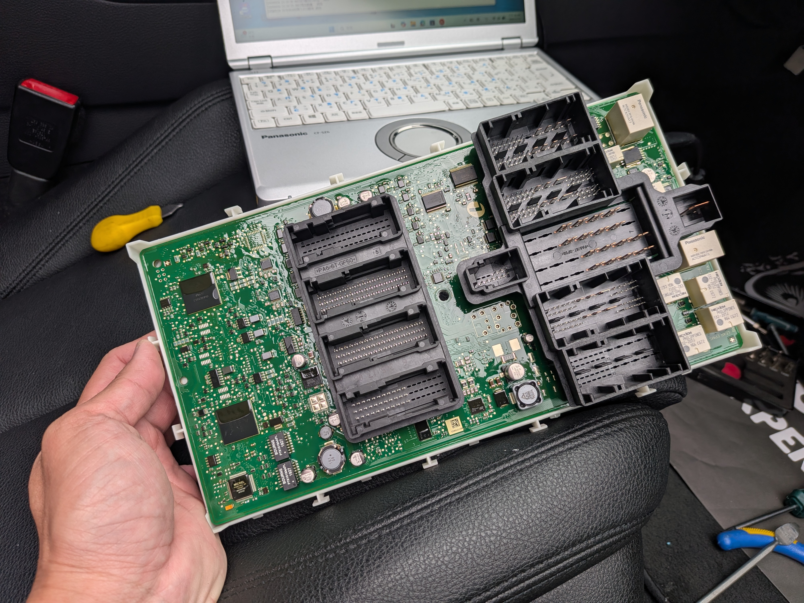

車主說明：從電路板架構看智慧鑰匙的感應邏輯
現代汽車大多配備 Keyless Go 智慧感應系統，雖然方便，但最怕遇到「感應不到鑰匙」的尷尬時刻。極致核心技術團隊彙整了多年經驗，教您如何在第一時間自我診斷並解決問題。
第一步：判斷是沒電還是故障？
觀察遙控器燈號與儀表提示。如果是電池沒電，LED 燈會微弱且儀表會顯示 Key Not Detected。
Emergency Tips
即便沒電，試著將鑰匙貼近啟動鈕或特定感應槽，利用被動 RFID 進行緊急發動。
Maintenance
更換電池時請確認規格 (CR2032/CR2450)，並避免使用金屬工具以免刮傷電路板。
Technical Support